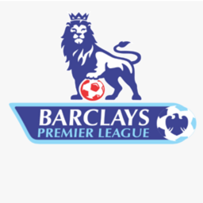

Engleska Premier liga osnovana je 1992. godine kao odvojena ligaška struktura od tradicionalne Football League First Division, koja je postojala još od 1888. godine. Glavni razlog za stvaranje Premier lige bio je želja najjačih engleskih klubova da povećaju prihode kroz unosnije televizijske ugovore i bolju organizaciju. Klubovi su vidjeli priliku da privuku globalnu publiku, što je dovelo do masivnog povećanja komercijalnih prihoda i interesa za engleski fudbal širom sveta.
Prva sezona Premier lige započela je 1992. godine sa 22 kluba, ali je taj broj smanjen na 20 timova u sezoni 1995-96 zbog dogovora sa FIFA-om, koji je želio da smanji broj utakmica. Manchester United, pod vodstvom legendarnog trenera Sir Alexa Fergusona, dominirao je ranim godinama lige i osvojio prvih osam od dvanaest mogućih titula. To je otvorilo put Unitedu da postane jedan od najpoznatijih sportskih brendova na svijetu.

Sredinom 2000-ih, liga je postala još konkurentnija dolaskom bogatih vlasnika u klubove poput Chelseaja i Manchester Cityja. Chelseajeva era započela je dolaskom ruskog milijardera Romana Abramoviča 2003. godine, a Manchester City je dobio snažnu finansijsku podršku 2008. godine od strane investitora iz Ujedinjenih Arapskih Emirata. Ovi potezi omogućili su klubovima da angažuju najbolje igrače i trenere, što je pojačalo kvalitet takmičenja.
Danas je Premier liga globalni fenomen, koji privlači najbolje fudbalske talente iz cijelog sveta i zarađuje milijarde dolara kroz TV prava i sponzorske ugovore. Liga je poznata po visokim standardima igre, uzbudljivim mečevima i rivalstvima među klubovima kao što su Manchester United, Liverpool, Arsenal, Chelsea, i Manchester City. Tokom tri decenije postojanja, Premier liga je redefinisala fudbal, postavši simbol elitnog evropskog klupskog takmičenja i najgledanija fudbalska liga na planeti.
